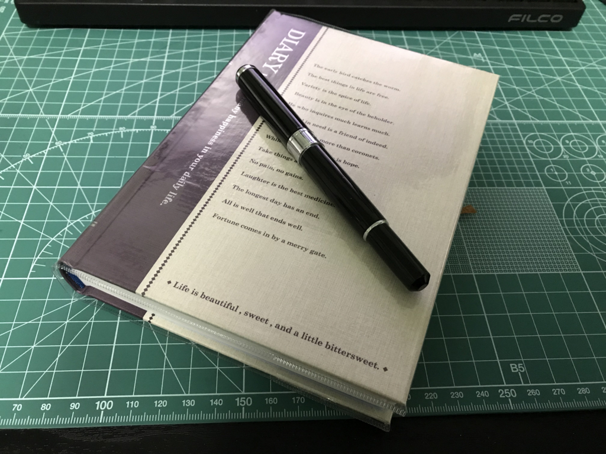

日記をつけはじめた。
執筆日時：
最近、いろいろ気力が足りなくてブログをさぼっていたのだけど、おかげで本の感想やらをメモる習慣がなくなってしまい、さらにブログから縁遠くなるというスパイラルに陥ってしまった。これではいかんと思ったので、先週あたりから日記を付けるようにしている。

日記を書くのは小学生以来（あの頃は日記を付けるという宿題があった）だったので、世にどのような日記帳が流布しているのかとんとわからぬ。とりあえず頑丈そうで、B6 程度のコンパクトサイズで、1年用で（何年も継続できるとは限らんからね）、できるだけ自由に書けるものがよかろうと思って、Amazon で適当にチョイスした。

- 出版社/メーカー: アピカ
- メディア: オフィス用品
- クリック: 7回
- この商品を含むブログを見る
表紙に謎の英文が書かれてるのがダサい（雰囲気で書いとけ、みたいな感じか？）けど、中身は割と気に入った。日記帳がいいと、いい万年筆もほしくなるな。あれ、沼の予感がする……。
ただ、今見に行ってら欠品になっている。こういうのはできるだけ毎年同じものを売っててほしいな……ほら、年によってデザインがちょろちょろ変わったりするのって、あとで並べたときにダサいじゃん。

アピカ 1年自由日記 横書き B6 D411-BL 日付表示なし 青
- 出版社/メーカー: アピカ
- 発売日: 2013/09/09
- メディア: オフィス用品
- この商品を含むブログを見る
ちょっと高いけど、もし日記が続くようであれば来年のタイミング（平成が終わるタイミングとか、ちょうどいいかもね）でこっちに乗り換えるのもありかなって気もする（こっちはまだ在庫があるし、表紙のデザインも、まぁ、シンプルそうだ）。5冊ぐらいババっと買いためて。
それにしても、ブログもそうだが、日記というものは、書き始めは大変しょうもないことしか書けないものだ。そもそも外に出ることもあまりないので、天気にすら興味を持つことができず、飽きれるぐらい書くことがない。しょうがないので、食った飯とか、飲んだ酒の量とか、なんとなく思ったこととか、そういうのでも書こうかと思う。そのうち、気の利いたことが書けるようになるやもしれん。